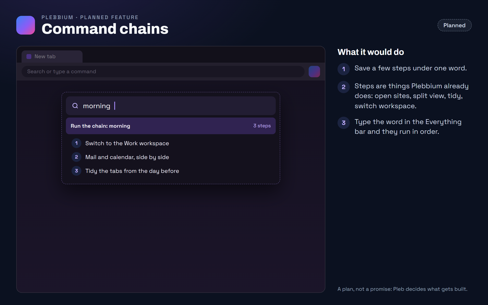

All features › Planned › Command chains
Command chains
PlannedSave a few steps under one word and run them all from the Everything bar, so a routine you repeat becomes one word.

What you would get
You name a chain and list its steps, using things Plebbium already does: open these sites, put two side by side, tidy, switch to a workspace. Typing that name in the Everything bar runs the steps in order, so a routine you repeat every day becomes one word.
For example
A chain called morning: switch to the Work workspace, open your mail and calendar side by side, and tidy the tabs from the day before. Ctrl+Shift+A, morning, Enter, and the day is set up.
Why it works this way
Routines, not repetition
Many people open the same few things in the same order every day; one word should be enough.
Built from what's there
A chain only uses steps Plebbium already has, so it can't do anything you couldn't do by hand.
Plans can change, and there is no date: Pleb decides what gets built and when.